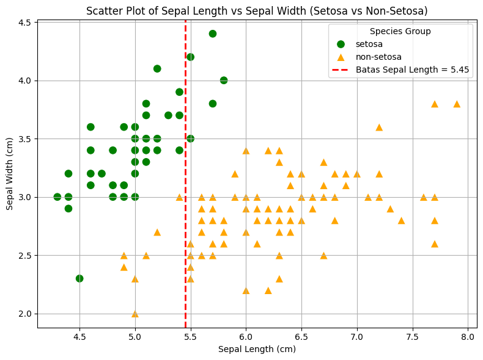

Decision Tree#
pip install seaborn
Requirement already satisfied: seaborn in c:\users\acer\appdata\local\programs\python\python39\lib\site-packages (0.13.2)
Requirement already satisfied: numpy!=1.24.0,>=1.20 in c:\users\acer\appdata\local\programs\python\python39\lib\site-packages (from seaborn) (2.0.2)
Requirement already satisfied: pandas>=1.2 in c:\users\acer\appdata\local\programs\python\python39\lib\site-packages (from seaborn) (2.2.3)
Requirement already satisfied: matplotlib!=3.6.1,>=3.4 in c:\users\acer\appdata\local\programs\python\python39\lib\site-packages (from seaborn) (3.9.4)
Requirement already satisfied: contourpy>=1.0.1 in c:\users\acer\appdata\local\programs\python\python39\lib\site-packages (from matplotlib!=3.6.1,>=3.4->seaborn) (1.3.0)
Requirement already satisfied: cycler>=0.10 in c:\users\acer\appdata\local\programs\python\python39\lib\site-packages (from matplotlib!=3.6.1,>=3.4->seaborn) (0.12.1)
Requirement already satisfied: fonttools>=4.22.0 in c:\users\acer\appdata\local\programs\python\python39\lib\site-packages (from matplotlib!=3.6.1,>=3.4->seaborn) (4.57.0)
Requirement already satisfied: kiwisolver>=1.3.1 in c:\users\acer\appdata\local\programs\python\python39\lib\site-packages (from matplotlib!=3.6.1,>=3.4->seaborn) (1.4.7)
Requirement already satisfied: packaging>=20.0 in c:\users\acer\appdata\local\programs\python\python39\lib\site-packages (from matplotlib!=3.6.1,>=3.4->seaborn) (24.2)
Requirement already satisfied: pillow>=8 in c:\users\acer\appdata\local\programs\python\python39\lib\site-packages (from matplotlib!=3.6.1,>=3.4->seaborn) (11.2.1)
Requirement already satisfied: pyparsing>=2.3.1 in c:\users\acer\appdata\local\programs\python\python39\lib\site-packages (from matplotlib!=3.6.1,>=3.4->seaborn) (3.2.3)
Requirement already satisfied: python-dateutil>=2.7 in c:\users\acer\appdata\roaming\python\python39\site-packages (from matplotlib!=3.6.1,>=3.4->seaborn) (2.9.0.post0)
Requirement already satisfied: importlib-resources>=3.2.0 in c:\users\acer\appdata\local\programs\python\python39\lib\site-packages (from matplotlib!=3.6.1,>=3.4->seaborn) (6.5.2)
Requirement already satisfied: zipp>=3.1.0 in c:\users\acer\appdata\roaming\python\python39\site-packages (from importlib-resources>=3.2.0->matplotlib!=3.6.1,>=3.4->seaborn) (3.21.0)
Requirement already satisfied: pytz>=2020.1 in c:\users\acer\appdata\local\programs\python\python39\lib\site-packages (from pandas>=1.2->seaborn) (2025.2)
Requirement already satisfied: tzdata>=2022.7 in c:\users\acer\appdata\local\programs\python\python39\lib\site-packages (from pandas>=1.2->seaborn) (2025.2)
Requirement already satisfied: six>=1.5 in c:\users\acer\appdata\roaming\python\python39\site-packages (from python-dateutil>=2.7->matplotlib!=3.6.1,>=3.4->seaborn) (1.17.0)
Note: you may need to restart the kernel to use updated packages.
#| echo: false
import seaborn as sns
import matplotlib.pyplot as plt
# Load Iris dataset
iris = sns.load_dataset('iris')
# Filter hanya Setosa dan gabungkan Versicolor + Virginica sebagai "Other"
iris['species_grouped'] = iris['species'].apply(lambda x: 'setosa' if x == 'setosa' else 'non-setosa')
# Plotting
plt.figure(figsize=(8, 6))
sns.scatterplot(
data=iris,
x='sepal_length',
y='sepal_width',
hue='species_grouped',
style='species_grouped',
palette={'setosa': 'green', 'non-setosa': 'orange'},
markers={'setosa': 'o', 'non-setosa': '^'}, # <-- Segitiga untuk non-setosa
s=100
)
# Tambahkan garis batas
plt.axvline(x=5.45, color='red', linestyle='--', linewidth=2, label='Batas Sepal Length = 5.45')
#plt.axhline(y=2.8, color='blue', linestyle='--', linewidth=2, label='Batas Sepal Width = 2.8')
# Label dan judul
plt.title('Scatter Plot of Sepal Length vs Sepal Width (Setosa vs Non-Setosa)')
plt.xlabel('Sepal Length (cm)')
plt.ylabel('Sepal Width (cm)')
# Legenda dan grid
plt.legend(title='Species Group')
plt.grid(True)
plt.tight_layout()
plt.show()

i ← 10;
if i ≥ 5 then
i ← u - 1;
else
if i ≤ 3 then
i ← i + 2;
end
end